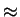
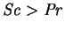
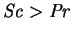

Rosenberger et al. (1997) studied the transport of iodine vapour along a horizontal cylinder (length4.5 diameters100mm) filled with octofluorocyclobutane between vertical plane crystalline source and sink walls. Experiments and numerical simulations were performed. Their work is remarkable for a number of reasons.
The first is the extreme verisimilitude of the numerical modelling.
The time-accurate solutions of the non-Boussinesq three-dimensional evolution
equations were obtained. All fluid properties were taken as functions of
composition (though not temperature, except for  ). Very few
simplifying assumptions were made; the only serious ones being that the
property variations were independent of temperature (except
). Very few
simplifying assumptions were made; the only serious ones being that the
property variations were independent of temperature (except  ) and given by
standard formulae from the kinetic theory of gaseous mixtures, and that the
iodine vapour only condensed at the sink wall. The importance of the latter
problem was mentioned on p.
) and given by
standard formulae from the kinetic theory of gaseous mixtures, and that the
iodine vapour only condensed at the sink wall. The importance of the latter
problem was mentioned on p.  .
This assumption was not a source of error, however, as explained in the next
point.
.
This assumption was not a source of error, however, as explained in the next
point.
The second is the approach to the prevention of supersaturation and nucleation. The axial variation of the azimuthally uniform wall temperature in the experimental cavity was adjusted until no condensation occurred on the wall connecting the hot and cold walls. This is to be contrasted with the evident supersaturation in the experiments of Hu and El-Wakil (1974; §3.3.2) and Weaver and Viskanta (1991c; §3.3.14).
The third is the novel and local nature of the comparison between the numerical
solutions and the experiments. Overall vapour transport rates were measured,
and were
in reasonable agreement with the numerical predictions, but as demonstrated
here in chapters 5 and 6, this global measure can be
insensitive to the local details of the solution. As suggested on
p.  , given the numerical solution
for the temperature and mass fraction (and total pressure in the case of
a non-Boussinesq model), it is possible to calculate the degree of
saturation that would obtain in the absence of secondary condensation.
Rosenberger et al. did this by comparing calculated and
saturation partial pressure curves
for the lines running along the top
and bottom of the cylinder, and found that calculated curves mostly lay
beneath the saturation curves, while approaching very close to them in the
region near the cold wall. For mixtures with constant properties,
supersaturation is more likely near the cold
wall for gas-vapour mixtures for which
, since this imparts a
reverse-sigmoid shape (negative curvature near the cold wall and positive
curvature near the hot wall)
to the mass fraction-temperature curve (McBain 1995, fig. 18;
McBain, Harris, Close & Suehrcke 1998, fig. 4;
Close & Sheridan 1989, fig. 1b).
, given the numerical solution
for the temperature and mass fraction (and total pressure in the case of
a non-Boussinesq model), it is possible to calculate the degree of
saturation that would obtain in the absence of secondary condensation.
Rosenberger et al. did this by comparing calculated and
saturation partial pressure curves
for the lines running along the top
and bottom of the cylinder, and found that calculated curves mostly lay
beneath the saturation curves, while approaching very close to them in the
region near the cold wall. For mixtures with constant properties,
supersaturation is more likely near the cold
wall for gas-vapour mixtures for which
, since this imparts a
reverse-sigmoid shape (negative curvature near the cold wall and positive
curvature near the hot wall)
to the mass fraction-temperature curve (McBain 1995, fig. 18;
McBain, Harris, Close & Suehrcke 1998, fig. 4;
Close & Sheridan 1989, fig. 1b). Since the thermal boundary
conditions applied in the numerical solutions were obtained from the profiles
found experimentally to be just sufficient to prevent secondary condensation,
the proximity of the calculated partial pressure curves to saturation is
a striking confirmation of the fidelity of the model.
Since the thermal boundary
conditions applied in the numerical solutions were obtained from the profiles
found experimentally to be just sufficient to prevent secondary condensation,
the proximity of the calculated partial pressure curves to saturation is
a striking confirmation of the fidelity of the model.
While the work of Rosenberger et al. (1997) represents the state-of-the-art in detailed numerical modelling of vapour transport, it also exemplifies the limitation of this approach: the modelling is so detailed and specific that it is difficult to draw any general conclusions from the results. This means that to predict the outcome of a future experiment with different given data another numerical solution of equal complexity would be required. It is submitted that the natural complement to this approach is provided by a much simpler level of modelling and the use of analytical methods. It is hoped that the reader will find examples of this in the present work.
Another limitation of the `high fidelity' approach is that while it was very
successful in modelling a small enclosure, representative of a PVT ampoule,
it would become very demanding of
time and computational resources if applied to large enclosures, such as
building wall cavities. The reason
for this is the sensitive dependence of the combined Grashof number, and thus
the nonlinearity of the problem, on the length scale,  . This restriction
is likely to be eased in the future, however, as the speed of
computers and efficiency of algorithms continue to increase.
The combined Grashof number is also comparatively low in PVT ampoules due to
the reduced total pressure (this increases the kinematic viscosity by reducing
the density).
. This restriction
is likely to be eased in the future, however, as the speed of
computers and efficiency of algorithms continue to increase.
The combined Grashof number is also comparatively low in PVT ampoules due to
the reduced total pressure (this increases the kinematic viscosity by reducing
the density).
Rosenberger et al. did form one general, rather stern, conclusion which is relevant to the consideration of three-dimensional effects in chapters 7-8: `agreement between the results of laboratory experiments and two-dimensional transport models should be met with reservation'.